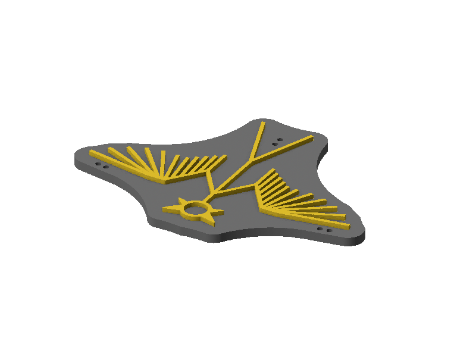

bag-brooch
Drafted with AI, not yet reviewed
point-based the plate is the logo's closing by a disc, worked out on points when the script loads
Brooch for a bag: a bird drawn in strokes, raised on a plate that follows its outline.
Ported from src/fabric/bag-brooch.scad.
- The plate is OpenSCAD’s offset(BROOCH_P) of the logo’s closing at BROOCH_P * 8, offset(-24) offset(24), which no field can take of a shape. The logo is known when the script runs, though: a disc rolled round points along its outline touches them in turn, and the plate is a rounded_polygon through the points it touches, with the disc’s arcs between them, offset. Within 0.08 mm of the original’s.
- The logo’s own offset(-N / 2) offset(N) offset(-N / 2), an opening and a closing, is not a field operation either. Its opening is kept where it shows, at the ears’ sharp tips, which it pulls in by 1.3 mm; the strokes’ square ends stay square, 0.08 mm out at their corners. Its closing fills the narrow gaps where the feathers leave their bone, up to 1.2 mm further than here.
- Circles are round, where $fn = 48 makes polygons.
- Compared with the original: the plate within 0.075 mm; the logo 1.2 mm short in a few gaps.

Files
Source
// Brooch for a bag: a bird drawn in strokes, raised on a plate that // follows its outline. // // Ported from src/fabric/bag-brooch.scad. // - The plate is OpenSCAD's offset(BROOCH_P) of the logo's closing at // BROOCH_P * 8, offset(-24) offset(24), which no field can take of a // shape. The logo is known when the script runs, though: a disc rolled // round points along its outline touches them in turn, and the plate is // a rounded_polygon through the points it touches, with the disc's arcs // between them, offset. Within 0.08 mm of the original's. // - The logo's own offset(-N / 2) offset(N) offset(-N / 2), an opening and // a closing, is not a field operation either. Its opening is kept // where it shows, at the ears' sharp tips, which it pulls in by 1.3 mm; // the strokes' square ends stay square, 0.08 mm out at their corners. // Its closing fills the narrow gaps where the feathers leave their bone, // up to 1.2 mm further than here. // - Circles are round, where $fn = 48 makes polygons. // idiom point-based: the plate is the logo's closing by a disc, worked out on points when the script loads import "keycap/points" as points; // --- Parameters --- const NOZZLE = 0.4; const BROOCH_R = 25.0; // the brooch's radius const BROOCH_P = 3.0; // padding between the logo and the edge const BROOCH_PLATE_TL = 10; // the plate's thickness in layers const LOGO_TL = 5; // the logo's thickness in layers const N = NOZZLE; const L = N / 2; // layer height const E = 0.01; const BROOCH_PLATE_T = BROOCH_PLATE_TL * L; const LOGO_R = BROOCH_R * 2 - BROOCH_P * 2; const LOGO_T = LOGO_TL * L; const LOGO_SW = N * 2; // stroke width // --- Logo --- let neck = [0.0, LOGO_R / 4]; let pelvis = [0.0, -LOGO_R / 6]; let foot = [LOGO_R / 8, -LOGO_R / 2]; let shoulder = [0.0, LOGO_R / 6]; let elbow = [LOGO_R / 8, 0.0]; let wrist = [LOGO_R / 4, LOGO_R / 6]; let fingertip = [LOGO_R / 3, LOGO_R / 6]; // Each line of the right half: its centre line, the body, leg and wing let lines = [[neck, pelvis], [pelvis, foot], [shoulder, elbow], [elbow, wrist], [wrist, fingertip]]; // Feathers along a bone, every `step` of its length as OpenSCAD's // [0 : step : 1] counts, their angles and lengths changing along it. fn feathers(from, to, step, angles, lengths) { let out = []; for i in 0..=(1.0 / step + 1e-9).floor().to_int() { let t = i * step; let a = lerp(angles[0], angles[1], t); let l = lerp(lengths[0], lengths[1], t); let p0 = lerp(from, to, t); out.push([p0, [p0[0] + cosd(a) * l, p0[1] + sind(a) * l]]); } out } lines += feathers(wrist, fingertip, 0.2, [-75.0, -10.0], [10.0, 15.0]); lines += feathers(elbow, wrist, 0.21, [-90.0, -80.0], [7.0, 9.0]); // Round joints where the wing bends let joints = [elbow, wrist, fingertip]; let head_at = [0.0, LOGO_R / 4 + N * 8]; let ears = [ points::move(points::scale([[0, 4], [16, 8], [8, 0]], N), head_at), points::move(points::scale([[0, -2], [14, -6], [8, 0]], N), head_at), ]; // The ears' tips are rounded by N / 2, as the logo's opening rounds them. let head = union(circle(N * 8).move(head_at), rounded_polygon(ears[0], N / 2), rounded_polygon(ears[1], N / 2)) .difference(circle(N * 6).move(head_at)); let half = union( lines.map(|l| stroke(l, LOGO_SW, #{caps: "butt"})), joints.map(|p| circle(N).move(p)), head, ); let logo = half.symmetric_x(); // --- Plate --- // Points along the logo's outline, each [x, y, side]: points along one // straight side share `side`, the others have -1. fn outline_points(lines, joints, head_at, ears) { let out = []; let side = 0; for l in lines { let n = normal2(l[0], l[1]); let w = global::LOGO_SW / 2; let a = [l[0][0] + w * n[0], l[0][1] + w * n[1]]; let b = [l[1][0] + w * n[0], l[1][1] + w * n[1]]; let c = [l[1][0] - w * n[0], l[1][1] - w * n[1]]; let d = [l[0][0] - w * n[0], l[0][1] - w * n[1]]; out += opened_points([a, b, c, d], global::N / 2, side); side += 4; } for p in joints { out += circle_points(p, global::N, 8); } out += circle_points(head_at, global::N * 8, 24); for ear in ears { out += opened_points(ear, global::N / 2, side); side += 3; } // The left half, its sides numbered after the right half's out + out.map(|p| [-p[0], p[1], if p[2] < 0 { -1 } else { p[2] + side }]) } // Points along a convex polygon's outline after the logo's opening by `r`: // its sides, and arcs round the corners of the polygon shrunk by `r`. // Side i of the polygon is numbered `side + i`. fn opened_points(polygon, r, side) { let n = polygon.len(); let inner = points::miter_offset(polygon, -r); let centre = points::scale([polygon.reduce(|sum, p| [sum[0] + p[0], sum[1] + p[1]], [0.0, 0.0])], 1.0 / n)[0]; let out = []; for i in 0..n { let a = inner[i]; let b = inner[(i + 1) % n]; let m = normal2(a, b); let k = if dot(m, [a[0] - centre[0], a[1] - centre[1]]) < 0.0 { -r } else { r }; out += side_points([a[0] + k * m[0], a[1] + k * m[1]], [b[0] + k * m[0], b[1] + k * m[1]], side + i); out += circle_points(a, r, 4); } out } // Points from `a` to `b`, at most 3 apart, along a straight side fn side_points(a, b, side) { let steps = (norm([b[0] - a[0], b[1] - a[1]]) / 3.0).ceiling().to_int(); let out = []; for i in 0..=steps { let p = lerp(a, b, i.to_float() / steps); out.push([p[0], p[1], side]); } out } fn circle_points(centre, r, n) { points::move(points::regular_polygon(n, r), centre).map(|p| [p[0], p[1], -1]) } // The corners of the closing by a disc of radius `r` of the shape that // `points` outline, OpenSCAD's offset(-r) offset(r), for rounded_polygon. // A disc rolled anticlockwise round the outside of the points touches them // in turn; between two of them the outline follows the disc, an arc that // rounded_polygon draws as the corner where its tangents at the two points // meet, rounded by `r`. Two points along one straight side join straight. fn closing_corners(points, r) { let n = points.len(); let start = 0; for i in 1..n { if points[i][1] < points[start][1] { start = i; } } // The disc's centre as seen from the point it touches; it starts below // the lowest point. let angle = -PI / 2; let at = start; let corners = []; loop { let p = points[at]; let next = -1; let turn = 2 * PI; let centre = []; // The point the disc meets first as it turns anticlockwise round p: // each point within 2 r is met with the disc's centre at one of the // two places r from both. for j in 0..n { let q = points[j]; let dx = q[0] - p[0]; let dy = q[1] - p[1]; let dd = dx * dx + dy * dy; if j == at || dd < 1e-12 || dd >= 4 * r * r { continue; } let d = sqrt(dd); let h = sqrt(r * r - dd / 4); for s in [-1.0, 1.0] { let c = [p[0] + dx / 2 - s * h * dy / d, p[1] + dy / 2 + s * h * dx / d]; let t = atan(c[1] - p[1], c[0] - p[0]) - angle; let t = t - (t / (2 * PI)).floor() * 2 * PI; let t = if t < 1e-9 { t + 2 * PI } else { t }; if t < turn { turn = t; next = j; centre = c; } } } if next < 0 { throw `closing_corners: no point within ${2 * r} of ${p}`; } let q = points[next]; corners.push([p[0], p[1], 0.0]); if q[2] < 0 || q[2] != p[2] { let m = [(p[0] + q[0]) / 2 - centre[0], (p[1] + q[1]) / 2 - centre[1]]; let k = r * r / dot(m, m); corners.push([centre[0] + m[0] * k, centre[1] + m[1] * k, r]); } angle = atan(centre[1] - q[1], centre[0] - q[0]); at = next; if at == start { break; } if corners.len() > 2 * n { throw "closing_corners: the disc never comes round"; } } corners } let closing = rounded_polygon(closing_corners(outline_points(lines, joints, head_at, ears), BROOCH_P * 8), 0.0); // Pairs of holes to sew the brooch on with: one on the axis, one each side let holes = [[0.0, -19.0], [0.0, -17.0]] + points::move(points::rotate([[-1.0, 0.0], [1.0, 0.0]], -10.0), [25.25, 7.25]); let plate = closing.offset(BROOCH_P).difference(union(holes.map(|p| circle(N * 1.5).move(p))).symmetric_x()); // --- Output --- draw_rgb(plate.extrude([0.0, BROOCH_PLATE_T]), 0.5, 0.5, 0.5); draw_rgb(logo.extrude([BROOCH_PLATE_T - E, BROOCH_PLATE_T + LOGO_T - E]), 1.0, 0.85, 0.2);